Axentra A powerful, lightweight Minecraft server management plugin
Run your Minecraft server with one powerful, lightweight plugin and 110+ commands — moderation, player protection, staff tools, server health monitoring, restarts, maintenance, warps and more. No bloat. No dependencies.


Everything you need in one plugin
Replace multiple plugins with a single, lightweight server management solution
Server Health New in 1.8.0
A /lag dashboard with TPS, MSPT and memory, the heaviest chunks with click-to-teleport, a 0–100 health score, TPS history, staff alerts on lag, automatic item cleanup and per-chunk entity limits.
Restarts & Maintenance
Scheduled and daily restarts with a bossbar countdown, and a maintenance mode with a custom MOTD, whitelist and automatic end time.
Player Protection
Inventory snapshots with restore GUI, trust levels, alt and VPN detection, freeze and tempfreeze, and a full player timeline.
Staff Tools
Staffmode with a tool hotbar, vanish with ghost effect, duty tracking, a reports GUI, staff statistics and smart join alerts.
Smart Moderation
Punishment GUI with templates that escalate on repeat offenses, case system, history GUI, staff notes, audit log and chat log snapshots.
Homes, Warps & Teleport
Homes and warps with GUIs, random teleport, TPA requests, spawn, /back and staff teleports. Reorder and rename warps right in the menu.
Chat & Utility
Private messages with social spy, staff chat, broadcast, mute/slow/clear chat and nicknames — plus fly, heal, virtual workstations, weather and time control.
Modular & Configurable
30 toggleable modules, 5 config files, an in-game settings GUI, fully configurable messages, live reload and configs that update themselves.
See it in action
Built for staff, designed to be intuitive
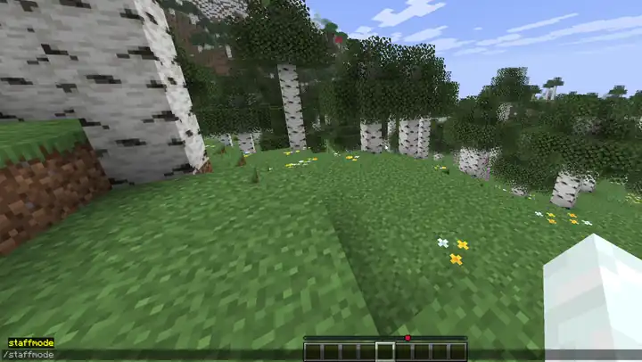
Vanish, teleport to players, freeze them, check their inventory and history, and punish — all from one hotbar.
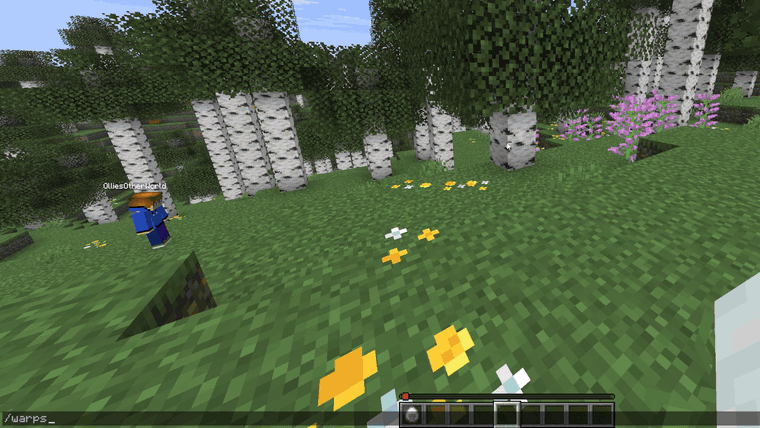
Reorder warps with shift-click, change icons with a hotbar key, and teleport — without leaving the menu.
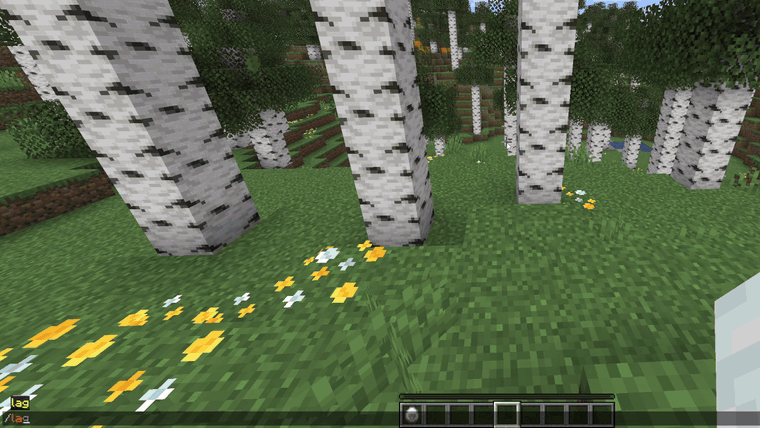
Find the heaviest chunks with /lag chunks, then check how the server performed over time in /lag history.
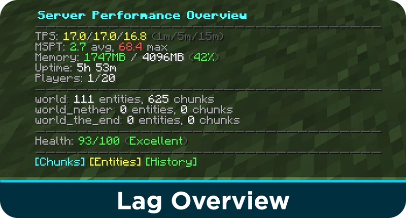
TPS, MSPT, memory, per-world entities and a health score with one command.
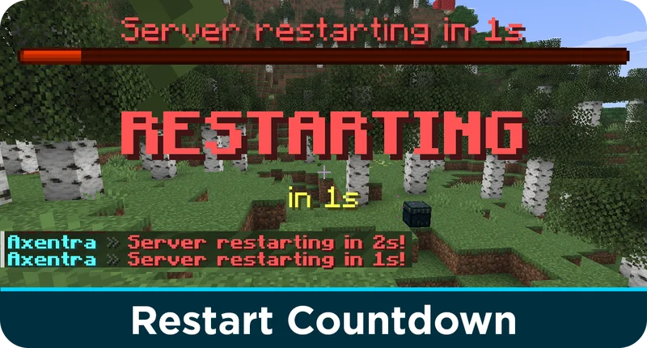
Players get a bossbar, sounds and a title before every scheduled restart.
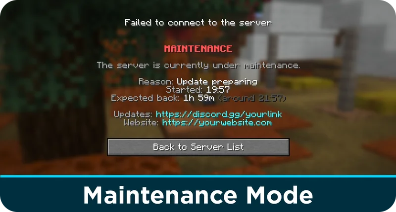
A clear screen with the reason, start time and when the server is expected back.
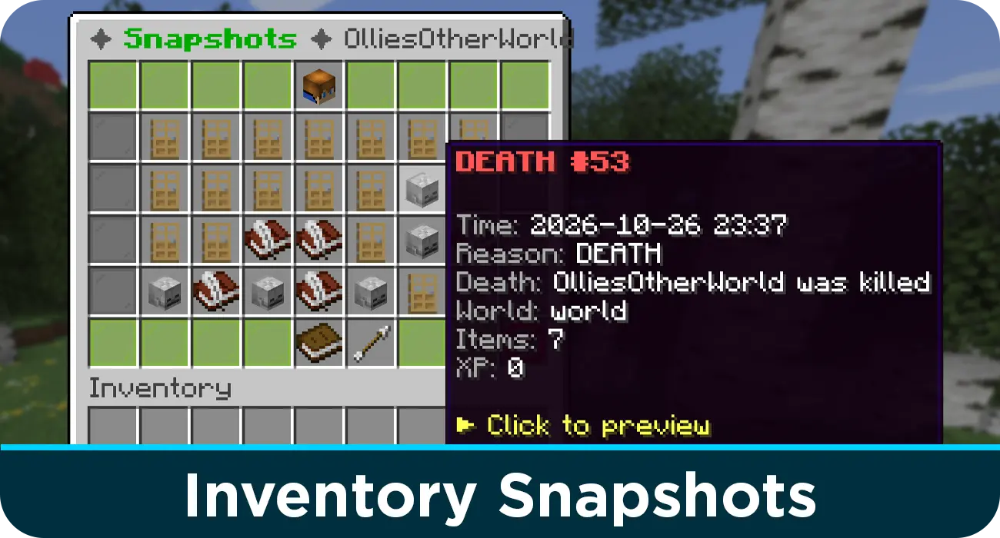
Lost items after a death or bug? Browse snapshots and restore them in one click.
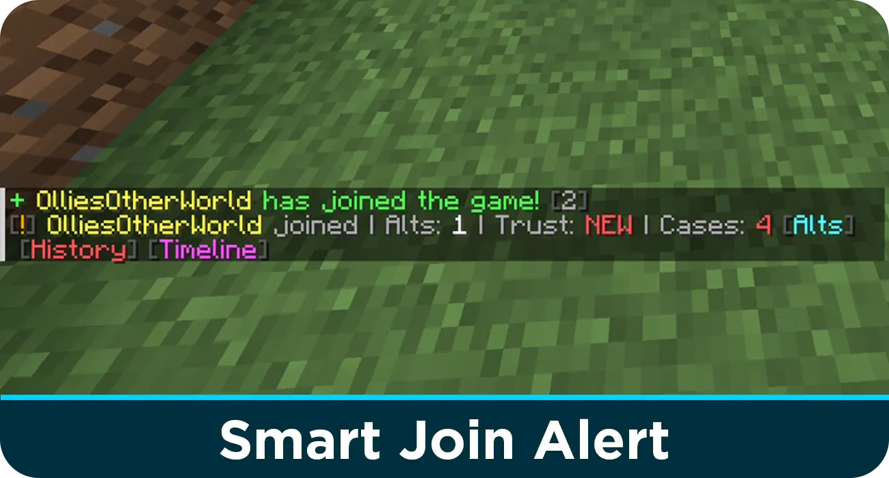
Staff instantly see alts, VPN usage, trust level and open cases when a player joins.
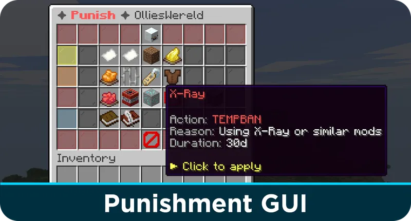
One-click punishments from templates that escalate automatically on repeat offenses.
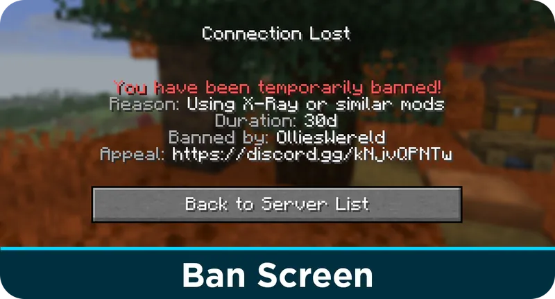
Clean ban screen with reason, duration, staff name and configurable appeal link.
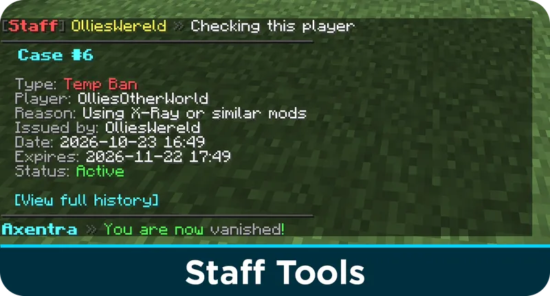
Case system, staff chat, vanish and clickable history — everything staff needs.
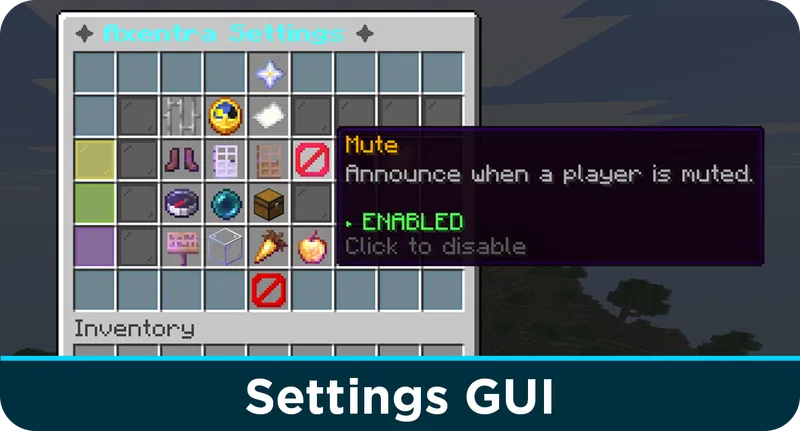
Toggle announcements, gameplay and vanish settings directly from the GUI.
110+ commands, one plugin
Every command fully configurable with permissions
/lagTPS, MSPT, memory and health score/lag chunksTop 10 heaviest chunks/lag entitiesEntities per type and status/lag history [hours]TPS history GUI/lag clear [items|mobs|all]Clear ground items or mobs/restart schedule <time>Schedule a restart/maintenance on [duration] [reason]Start maintenance mode/maintenance offEnd maintenance mode/restoreinv <player>View & restore inventory snapshots/trust <player>View player trust level/trust set <player> <level>Set trust level/alts <player>View alt accounts/freeze <player>Freeze a player/tempfreeze <player> <duration>Freeze a player temporarily/unfreeze <player>Unfreeze a player/timeline <player>View activity timeline/punish <player>Open punishment GUI/ban <player> [reason]Permanently ban a player/tempban <player> <duration> [reason]Temporarily ban a player/mute <player> [reason]Mute a player/warn <player> [reason]Warn a player/kick <player> [reason]Kick a player/case <id>View case details/case resolve <id>Resolve a case/history <player>View moderation history/auditlog <staff>View staff action log/sethome [name]Set a home location/home [name]Teleport to a home/delhome <name>Delete a home/homes [player]View all homes in GUI/setwarp <name>Create a warp/warp <name>Teleport to a warp/warpsWarps GUI (reorder, rename, icons)/rtp [world]Random safe teleport/msg <player> <message>Send a private message/reply <message>Reply to last message/staffchat [message]Staff-only chat/broadcast <message>Broadcast to all players/mutechatToggle global chat mute/slowchat [seconds]Toggle slow chat/clearchatClear chat/nick <name|off>Set nickname/tpa <player>Send teleport request/tpacceptAccept request/tpdenyDeny request/tpahere <player>Request player to teleport to you/spawn [player]Teleport to spawn/backReturn to previous location/tp <player>Teleport to a player/tphere <player>Teleport player to you/topTeleport to highest block/fly [player]Toggle flight/heal [player]Heal a player/vanish [player]Toggle vanish/gamemode <mode>Change gamemode/repairRepair held item/clear [player]Clear inventory/workbenchOpen crafting table/enderchestOpen ender chestGet Axentra
Free and open source — MIT licensed
Frequently asked questions
Quick answers before you install
Does Axentra work on Spigot and Paper?
Yes. Axentra runs on Spigot, Paper and Paper forks like Purpur.
Which Minecraft versions are supported?
Axentra supports Minecraft 1.21 and higher, and needs Java 21 or newer.
Does Axentra need any other plugins?
No. Axentra is fully standalone with zero external dependencies. SQLite is bundled inside the jar, so there is no database to set up.
Can I turn off features I don't need?
Yes. Axentra has 30 modules that you can toggle in the enabled-modules section of config.yml. The commands of a disabled module are fully unregistered. Changing a module requires a server restart.
Does the lag monitoring slow down my server?
No. TPS and MSPT are read from the server itself (using the Paper API when available), chunk activity is written to the database in one batch per minute, and chunk scans don't copy tile entities on Paper.
Can I use Axentra with another chat plugin?
Yes. Set enabled-modules.chat-management to false so Axentra doesn't listen to chat events. Mutes keep working.
How do I update Axentra?
Replace the old jar with the new one and restart your server. Your config files and database are preserved, and new config keys are added automatically with their comments.
Where is player data stored?
Bans, mutes, warns, cases, notes, snapshots, homes, warps, TPS history and other data are stored in a local SQLite database at plugins/Axentra/data.db.